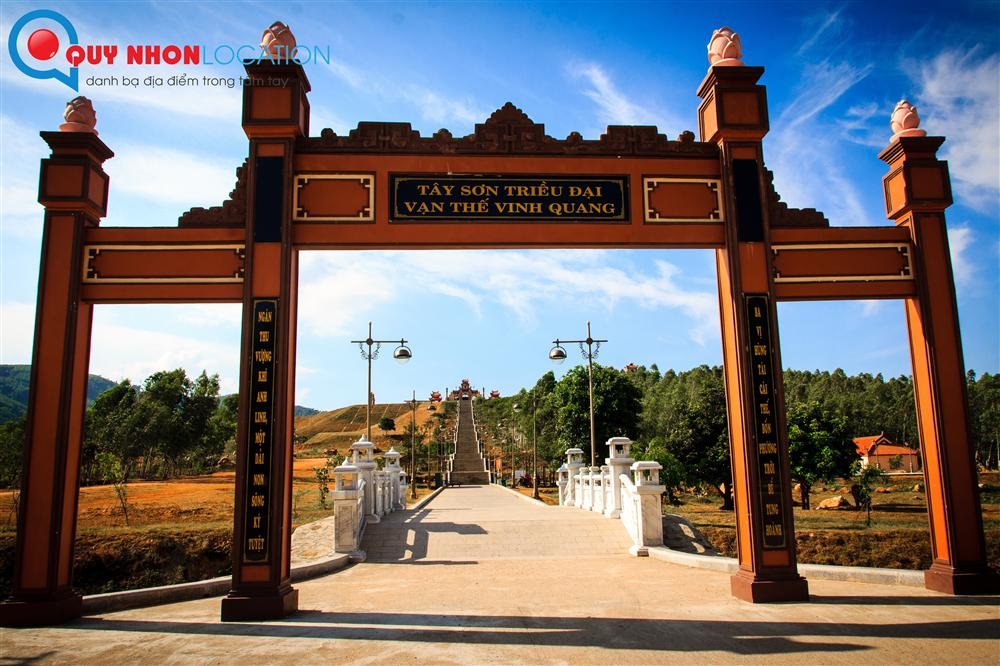
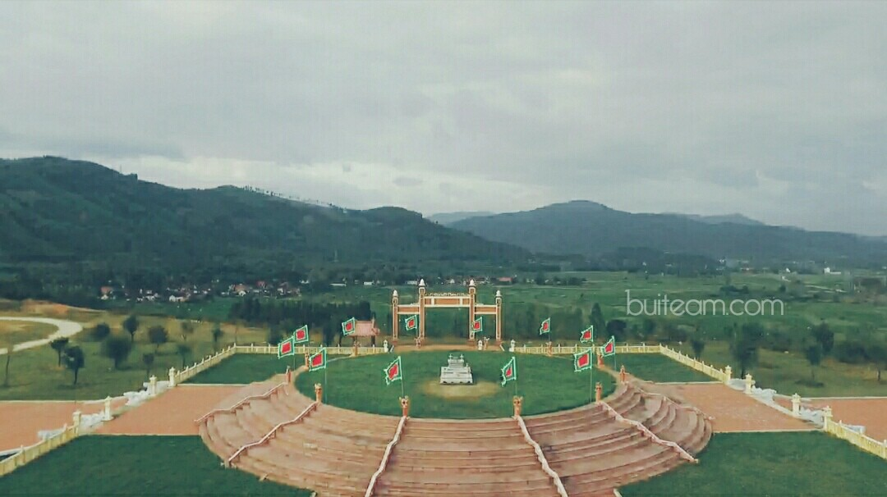
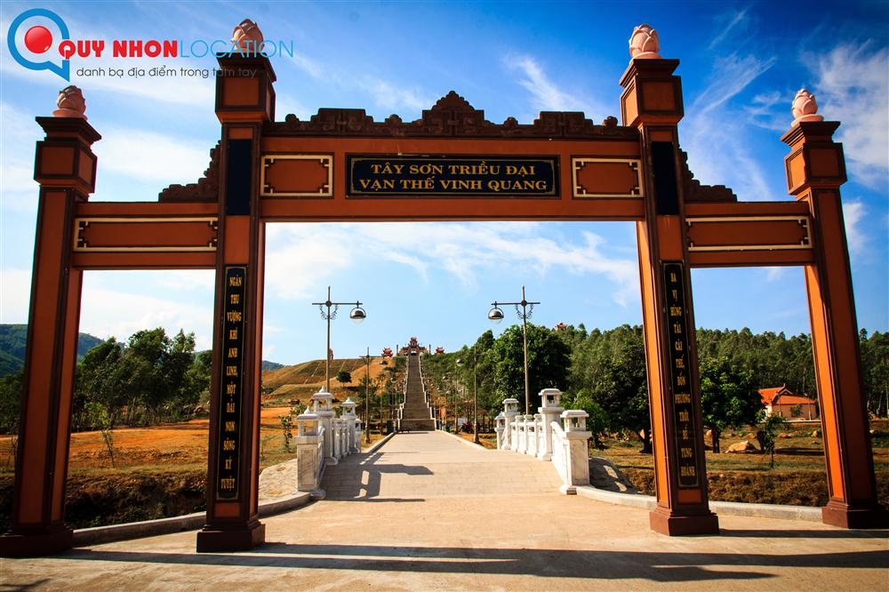
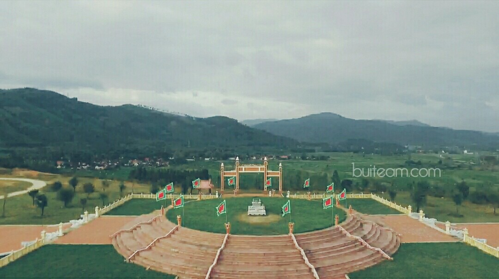
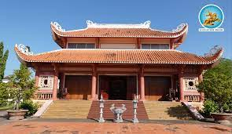
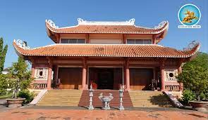

Bảo Tàng Lịch Sử
Bảo Tàng Bình Định
-Bảo tàng tỉnh Bình Định là nơi lưu giữ, trưng bày, bảo quản và giới thiệu các hiện vật lịch sử, văn hóa của đất và người Bình Định qua các thời kỳ lịch sử...

Bảo Tàng Quang Trung
- Bảo tàng Quang Trung là một trong những bảo tàng lịch sử nổi tiếng ở Bình Định, nơi đây gắn liền với khởi nghĩa Tây Sơn là một trong những cuộc khởi nghĩa giải phóng dân tộc thành công nhất ở nước ta. Để lưu giữ lại những hiện vật lịch sử một thời đáng nhớ, người ta cho xây dựng bảo tàng Quang Trung Bình Định ngay tại chính quê hương của người anh hùng dân tộc.

Các Di Tích Lịch Sử
Đàn tế trời đất Tây Sơn
Đàn tế trời Đất Tây Sơn hay còn được gọi là Bảo Sơn Thiên Ấn là một khu di tích tâm linh được xây dựng vào năm 2012. Là khu di tích lịch sử mang giá trị cao với người dân nơi đây và đất nước, đó cũng là nét đẹp văn hóa vùng miền nơi đây. Đàn tế trời đất hay còn gọi là Khu du lịch tâm linh Ấn Sơn thuộc thôn Hòa Sơn, xã Bình Tường, tỉnh Bình Định sẽ là điểm đến hấp dẫn với những khách hành hương.
 




Di tích điện thờ Tây Sơn Tam Kiệt

Điện thờ Tây Sơn Tam kiệt hiện nay, được xây dựng trên nền đình làng Kiên Mỹ xưa. Tương truyền ở đó là nền nhà cũ của ba thủ lĩnh Tây Sơn, đây cũng chính là nơi sinh ra ba anh em: Nguyễn Nhạc-Nguyễn Huệ-Nguyễn Lữ.
Đền Thờ Đô Đốc Bùi Thị Xuân
Đền thờ Bùi Thị Xuân được qui hoạch xây dựng trên khu đất mới có tổng diện tích 5.191 m2, trong đó diện tích xây dựng 178m2 tọa lạc tại khối Phú Xuân, thị trấn Phú Phong, huyện Tây Sơn
 

Bà Bùi Thị Xuân là người ở thôn Xuân Hòa, phía Nam sông Kôn, thuộc tổng Phú Phong, huyện Tuy Viễn, phủ Quy Nhơn (nay thuộc thôn Phú Xuân, xã Bình Phú, huyện Tây Sơn, tỉnh Bình Định).